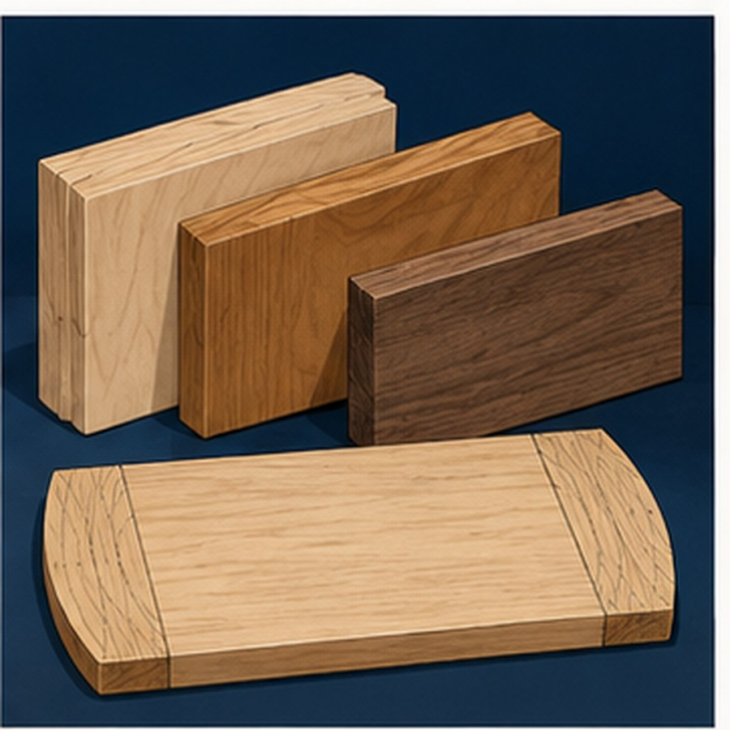
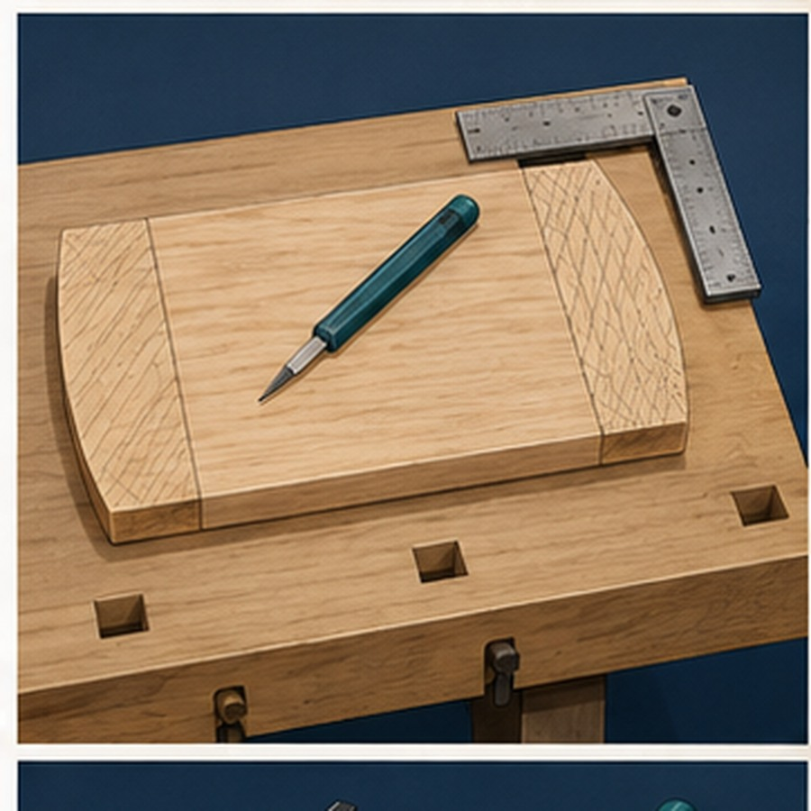

Module presentation
Learn with the slides
Use the presentation to preview grain layout, biscuit-joint positions and controlled shaping before reading the three theory sections.
Project plan and evidence
Use the plan and save evidence
Use the supplied project plan as the authority throughout the module, then open the Bread Board folio when your evidence is ready.
Module learning
Learn, then check
Read the three theory sections, use the guided checks and save your written evidence in order.
Two-week roadmap
What you will learn and produce
- InspectRead grain and visible defects before layout.
- OrientKeep reference faces and component order clear.
- TransferAlign matching biscuit-joint marks.
- ShapeRemove waste while preserving boundaries.
- CheckCompare the result with the plan.
Learning intentions
Explain how grain, reference orientation and transferred joint marks support a plan-accurate assembly.
Success criteria
- I keep components paired and labelled.
- I explain why biscuit marks must align.
- I know when shaping should stop for advice.
Your work
Student details
Your entries save automatically in this browser. Use Print / Save PDF before leaving.
Theory 1
Grain direction and planning a board layout

A successful board layout begins with reading the project plan before arranging any timber. The plan shows how the required components relate to one another and provides the reference for deciding their position and orientation. Study the information carefully before marking or cutting so that the layout is based on the planned outcome rather than on guesswork.
Observe the grain direction in each piece of timber. Grain may appear as long lines, curves or changes in pattern across the face and edges. Look at the timber from more than one side, as the direction may be clearer on one surface than another. Careful observation helps identify how the pieces can be arranged to create an orderly and consistent appearance.
Orientation is the direction in which a component is placed within the layout. Choose an orientation that supports neat work and practical use. Grain patterns that flow in a similar direction can make separate pieces appear visually connected. A random arrangement may look uneven or make it harder to maintain a clear relationship between components.
Keep related features aligned with the information shown on the plan. Reference edges, faces and grain direction should be considered together rather than one at a time. Once an orientation has been selected, keep it consistent while marking so that pieces are not accidentally turned or reversed.
Allow enough material around every planned component before cutting begins. Lines placed too close to an edge, another component or the end of the timber may leave insufficient material for accurate work. Check the full outline and the spaces between components rather than looking at only one measurement at a time.
A layout should also use the available timber carefully. Components should be arranged efficiently, but saving material must not come at the expense of accuracy or a clear working margin. Crowding the layout can lead to damaged edges, confused lines and avoidable waste.
Complete a final check against the project plan before any material is removed. Confirm that each component is present, correctly oriented and aligned with the selected reference points. Make sure there is sufficient timber around every marked area and that the arrangement matches the plan. Correcting the layout at this stage is simple; correcting it after cutting may not be possible.
Layout check
- Read the project plan first.
- Observe the grain on each face and edge.
- Choose a clear, consistent orientation.
- Keep related features aligned.
- Allow sufficient material around each component.
- Compare the complete arrangement with the plan.
Theory 2
Planning accurate biscuit joint positions
Accurate biscuit joint positions begin with the project plan. Before marking anything, identify which components are joined and which faces meet in the finished breadboard. Matching parts should be placed together in the same orientation shown on the plan. This helps prevent marks being placed on the wrong edge, the wrong face or the wrong end of a component.
Choose and maintain consistent reference faces and reference edges. These are the surfaces used to position, mark and check every matching joint. Mark them clearly using the workshop’s agreed symbols. When both components are referenced from corresponding faces and edges, small variations in timber thickness are less likely to cause the joint line to become uneven.
Arrange matching pieces as they will sit in the completed project. Keep the inside and outside faces easy to recognise, and check the direction of each component before transferring any marks. Do not rotate, flip or swap pieces after marking unless their orientation is checked again against the plan. A simple matching system, such as light identification marks across adjoining pieces, can help keep components correctly paired.
Transfer joint-position marks carefully across both matching pieces while they are held together in alignment. The marks should clearly show that each position corresponds with the same location on the adjoining component. Use a sharp pencil and make only the marks needed. Thick, unclear or repeated lines can create confusion when the pieces are separated.
Before any cut or slot is made, pause and check the full arrangement. Confirm that the correct parts are together, the reference marks match, the joint positions line up and the components still face the intended direction. Compare the layout with the project plan rather than relying on memory.
Guesswork should never replace this checking process. Estimating positions by eye, copying from an unrelated component or assuming that similar-looking pieces are interchangeable can produce misaligned joints. Once a slot has been made in the wrong position, correcting the problem may be difficult and could reduce the accuracy or appearance of the finished breadboard.
Joint-position routine
- Read the project plan and identify the matching parts.
- Place the components in their finished orientation.
- Confirm consistent reference faces and edges.
- Pair and identify adjoining pieces.
- Transfer each mark carefully across the matching components.
- Check alignment, orientation and joint positions again.
- Proceed only when every mark agrees with the plan.
Theory 3
Shaping timber with control

Shaping timber accurately begins with reading the planned profile before removing any material. The drawing or template shows the intended outline and helps identify which areas must remain. Take time to study the shape, confirm its orientation and compare it with the marked component. Beginning without a clear understanding can quickly lead to an uneven edge or a profile that no longer matches the plan.
Boundary lines provide the main visual guide during shaping. These lines should remain clear for as long as possible and must not be rubbed out, covered or removed too early. Work towards the line rather than immediately cutting or sanding it away. A visible boundary makes it easier to judge progress and helps prevent accidental removal of material that is needed for the final shape.
Material should be removed in small, controlled amounts. Heavy or rushed shaping can create dips, flat spots or uneven curves that are difficult to correct. Each stage should bring the timber closer to the planned profile without going beyond it. Gradual removal also allows changes in grain direction or resistance to be noticed before they cause damage to the surface or edge.
Progress must be checked regularly from more than one viewing angle. Stop shaping, clear away loose dust and compare the component with the plan or template. Look along the edge to identify high spots, low spots or areas that are becoming uneven. Frequent checking reduces the chance of repeating the same error across a larger section of the work.
The timber must remain securely supported throughout the shaping process. A component that moves, twists or vibrates is difficult to control and may produce an inaccurate result. Support should hold the work firmly without damaging the surface or covering the area that needs to be checked. Reposition the component when necessary rather than stretching, leaning or working from an awkward direction.
Avoid trying to finish the entire shape in one continuous effort. Controlled shaping involves short periods of material removal followed by inspection and adjustment. Consistent, balanced work produces a cleaner result than rushing one section and attempting to match the remaining areas afterwards.
If the planned profile is unclear, the markings do not match the drawing, or the correct orientation is uncertain, stop before removing more material. Seek teacher direction and confirm the intended shape. Timber cannot be replaced once it has been removed, so clarification is always better than guesswork.
Shaping check
- Planned profile has been read and correctly oriented.
- Boundary lines remain clear and visible.
- Material is being removed gradually.
- Progress is checked from several angles.
- The component is securely supported.
- Work stops if the intended profile is unclear.
Guided practice
Weeks 3-4 knowledge checks
Use the feedback and hints to correct each misunderstanding.
Apply your learning
Scaffolded written responses
Use the sentence starters and concept guidance before comparing with the appropriate response example.
Finish the two-week block
Save your evidence
Save the completed page as a PDF before changing devices or clearing browser data.
No data is sent from this page. Google Classroom upload remains outside this website.